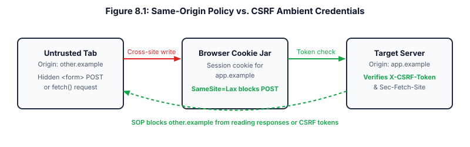

Chapter 8: Cross-Site Request Forgery, Clickjacking, and Browser Defenses
Learning Objectives
By the end of this chapter, you should be able to:
- Explain the Same-Origin Policy (SOP) and how ambient credentials (automatic cookie attachment) enable Cross-Site Request Forgery (CSRF).
- Implement and audit synchronizer tokens, SameSite cookies, and Fetch Metadata defenses.
- Explain clickjacking (UI redressing) and prevent it using CSP
frame-ancestorsandX-Frame-Options. - Recognize why XSS defeats all CSRF defenses on the same origin.
8.1 The Same-Origin Policy and Ambient Authority
An origin is the tuple (scheme, host, port). For example, https://app.example:443 and http://app.example:80 are different origins (different scheme and port). Under the Same-Origin Policy (MDN), browsers generally block JavaScript in one origin from reading responses from another origin, but cross-origin writes—such as HTML form submissions, links, and redirects—are permitted by default.
When a user is signed into app.example with a session cookie and visits an untrusted third-party page other.example, a hidden <form> on other.example can submit a POST request to app.example/account/email. Because cookies act as ambient credentials, the browser automatically attaches the user's app.example session cookie unless restricted. That is Cross-Site Request Forgery (CSRF) (MITRE CWE-352).

8.2 CSRF Defenses
Per the OWASP CSRF Prevention Cheat Sheet, effective CSRF protection combines token-based verification with browser-level signals:
1. Synchronizer Token Pattern (Primary Defense)
The server generates an unpredictable, per-session (or per-request) cryptographic CSRF token and embeds it in the HTML form or provides it to same-origin JavaScript to send in a custom header (e.g., X-CSRF-Token). On every state-changing request (POST, PUT, PATCH, DELETE), the server compares the submitted token against the session's expected token using constant-time comparison.
Because the Same-Origin Policy prevents other.example from reading the token from app.example, other.example cannot produce a valid state-changing request.
2. SameSite Cookie Attribute
SameSite=Strict: Never sends the cookie on any cross-site request, including clicking a normal link from an external site.SameSite=Lax(modern browser default): Blocks cookies on cross-sitePOSTforms and background subrequests, while allowing cookies on top-levelGETnavigations.
Warning: SameSite=Lax does not protect GET endpoints that accidentally perform state changes (e.g., GET /account/delete). Never use GET for state-changing operations.
3. Custom Request Headers and Fetch Metadata
For JSON APIs using fetch(), requiring a non-simple custom header (such as X-Requested-With or Authorization: Bearer <token>) triggers a CORS preflight check (OPTIONS), which cross-origin pages cannot pass unless CORS is misconfigured. Modern browsers also send Fetch Metadata headers (Sec-Fetch-Site: cross-site vs. same-origin, Sec-Fetch-Mode, Sec-Fetch-Dest), which cannot be forged by client-side JavaScript. A server can inspect Sec-Fetch-Site and reject cross-site state-changing requests (POST, PUT, DELETE) before any business logic executes.
4. Double-Submit Cookie Pattern (Stateless Fallback)
When an application cannot maintain server-side session state for CSRF tokens, the Double-Submit Cookie pattern sets a random CSRF token in a cookie and requires the client to also send that exact token in a custom header or form field. To prevent subdomain cookie-tossing bypasses, bind the CSRF token cryptographically to the user session identifier using HMAC (HMAC(secret, session_id + random_nonce)).
Why XSS Defeats CSRF Defenses
If an application has an XSS vulnerability on the same origin, injected JavaScript runs inside the trusted origin—it can read the CSRF token directly from the DOM and submit authenticated requests. Fixing XSS is a prerequisite for trustworthy CSRF protection.
8.3 Clickjacking (UI Redressing)
Clickjacking tricks a user into clicking a visible button on an untrusted page while actually clicking a transparent <iframe> overlaid on top—for example, a benign-looking button positioned directly over an embedded "Delete Account" or "Authorize App" button.
CSRF tokens do not stop clickjacking because the user is interacting with the real, legitimate page inside the iframe—the valid CSRF token is already present.
Framing Defenses
Prevent unauthorized framing with Content Security Policy frame-ancestors (and X-Frame-Options for legacy browser compatibility):
Content-Security-Policy: frame-ancestors 'none';
X-Frame-Options: DENYUse 'self' instead of 'none' (SAMEORIGIN in X-Frame-Options) if the application legitimately embeds its own pages in iframes.
Key Takeaways
- CSRF exploits ambient cookie attachment across origins because SOP permits cross-origin writes by default.
- Combine synchronizer tokens,
SameSite=Lax/Strictcookies, and Fetch Metadata (Sec-Fetch-Site) for state-changing requests. - Prevent clickjacking with
Content-Security-Policy: frame-ancestorsandX-Frame-Options.
Applied Exercise
Analyze a GET /account/disable endpoint protected only by SameSite=Lax cookies. Explain why it remains vulnerable to CSRF and describe two changes required to secure it.
Review Questions
- Why does the Same-Origin Policy stop a cross-origin script from reading account data yet still allow a CSRF form submission?
- Why does
SameSite=Laxfail to protect an application that changes user email addresses via aGETrequest? - Why do CSRF tokens fail to prevent clickjacking, and which HTTP headers prevent clickjacking instead?
- Explain why any XSS vulnerability on an origin undermines that origin's CSRF tokens.
References
- MDN Web Docs: Same-origin policy — https://developer.mozilla.org/en-US/docs/Web/Security/Defenses/Same-origin_policy
- OWASP Cheat Sheet Series: Cross-Site Request Forgery Prevention — https://cheatsheetseries.owasp.org/cheatsheets/Cross-Site_Request_Forgery_Prevention_Cheat_Sheet.html
- MDN Web Docs: Cross-site request forgery (CSRF) — https://developer.mozilla.org/en-US/docs/Web/Security/Attacks/CSRF
- MITRE CWE-352 (CWE Top 25) — https://cwe.mitre.org/top25/archive/2025/2025_cwe_top25.html